TI301 – Algorithmique et Structures de données 2 · Projet Informatique et Mathématiques
La forêt et la lumière Partie 1
Ce projet est rédigé en commun pour les modules SDD2 et Probabilités.
Idée originale, conception, réalisation : Nicolas FLASQUE Validation pour le module de probabilités : Federico ZALAMEA, Brice JUANICO Site web du projet et animations : Nicolas FLASQUE et Claude code pro - modèle Opus 5.5
On plante de jeunes arbres et on les laisse pousser, saison après saison.... Pour pousser, un arbre a besoin de lumière ; or les arbres se font de l'ombre. Un arbre qui prend la lumière pousse plus vite et fait de l'ombre aux autres arbres. Les arbres qui poussent moins vite ont moins de lumière et s'arrêtent de pousser.
Un arbre, au sens botanique, est aussi un arbre au sens informatique : le premier rameau sort du sol, puis de nouveaux rameaux naissent à son extrémité, et ainsi de suite.
Le but de ce projet est de simuler la pousse de forêts entières, de représenter chaque arbre par une structure d'arbre en C, d'en mesurer les caractéristiques et de les visualiser.
Les outils et les résultats que vous produirez seront ensuite utilisés dans le projet de mathématiques.
Dans ce sujet ne seront présentées que les notions essentielles pour la partie informatique.
Organisation du projet
Partie 1 Faire pousser au hasard un arbre seul, en pleine lumière, le mesurer et l'enregistrer dans un fichier ;
Partie 2 Faire pousser une forêt entière, dans laquelle les arbres se font de l'ombre ;
Partie 3 Simuler des milliers de forêts, analyser et visualiser les résultats.
1Qu'est-ce qu'un arbre ?
Il faut bien distinguer deux types d'arbres dans ce projet
les arbres qui « poussent » dans la simulation : ce sont les arbres à rameaux ;
les arbres 3-aires qui les représentent : ce sont les arbres informatiques.
Les rameaux des arbres à rameaux
Un arbre à rameaux est fait de... rameaux !. Chaque rameau est un petit segment, qui part de l'extrémité de son rameau parent. Le premier rameau, appelé le pied, part du sol.
Un arbre à rameaux est vu en 2D : l'axe \(x\) pour la direction horizontale (de gauche à droite - nous en aurons besoin pour les parties suivantes), l'axe \(y\) mesure l'altitude au-dessus du sol.
Pour chaque rameau, on stocke :
la position de son extrémité : \(x\) et \(y\) ;
sa longueur : une valeur à virgule, entre 0,7 et 1,3 ;
sa direction : un angle en degrés, 0 pour un rameau vertical, positif s'il penche vers la droite, négatif s'il penche vers la gauche ;
la saison à laquelle il est apparu (0 pour le pied) ;
son état :
bourgeon son extrémité porte un bourgeon, qui pourra encore donner naissance à de nouveaux rameaux ;
bois de nouveaux rameaux sont déjà nés à son extrémité.
les calculs de position \((x,y)\) des rameaux sont fournis (fonction growBranch) : l'extrémité d'un rameau se calcule à partir de celle de son parent, de sa direction et de sa longueur (voir l'exemple ci-dessous).
L'arbre informatique
le pied est la racine (root) de l'arbre ;
les fils d'un rameau sont les rameaux nés à son extrémité ; un rameau a au plus 3 fils ;
les feuilles de l'arbre (les nœuds sans fils) sont exactement les rameaux qui portent un bourgeon.
La génération d'un nœud (rameau) est sa distance = profondeur au pied dans l'arbre : le pied est de génération 0, ses fils de génération 1, les fils de ses fils de génération 2, et ainsi de suite.
La hauteur de l'arbre informatique est la plus grande génération de ses rameaux. Attention à ne pas la confondre avec l'altitude des rameaux, qui est mesurée en unités de longueur.
Exemple
Voici un arbre de 10 rameaux, qui a poussé pendant 4 saisons. Le pied a son extrémité en (\(x\) = 4,5 ; \(y\) = 1,0). Les rameaux sont numérotés dans l'ordre où ils sont apparus :
Rameau
Saison
Parent
Direction
Longueur
Extrémité (x ; y)
Génération
État
0
0
–
0
–
(4,50 ; 1,00)
0
bois
1
1
0
0
1,0
(4,50 ; 2,00)
1
bois
2
1
0
−45
0,8
(3,93 ; 1,57)
1
bois
3
2
1
5
1,0
(4,59 ; 3,00)
2
bois
4
2
1
50
0,8
(5,11 ; 2,51)
2
bourgeon
5
2
1
−40
0,7
(4,05 ; 2,54)
2
bourgeon
6
3
3
0
1,0
(4,59 ; 4,00)
3
bois
7
3
2
−50
0,6
(3,47 ; 1,95)
2
bourgeon
8
4
6
−5
0,9
(4,51 ; 4,89)
4
bourgeon
9
4
6
45
0,7
(5,08 ; 4,49)
4
bourgeon
Par exemple, le rameau 2 part de l'extrémité du rameau 0, avec une direction de −45° et une longueur de 0,8 : \(x = 4{,}5 + 0{,}8 \times \sin(-45^\circ) \approx 3{,}93\) et \(y = 1{,}0 + 0{,}8 \times \cos(-45^\circ) \approx 1{,}57\).

La pousse de l'arbre de l'exemple (une saison = 0,6 seconde)
Un autre exemple :

La pousse d'un arbre de hauteur 23 (290 rameaux, 23 saisons, une saison = 0,4 seconde)
Lien entre l'arbre informatique et l'arbre que l'on fait pousser
Chaque nœud de l'arbre informatique est un rameau ; un lien de l'arbre informatique n'est pas un rameau, il indique seulement qu'un rameau est né à l'extrémité d'un autre. Survolez un nœud ou un rameau pour voir ses caractéristiques.
Arbre informatique
racine (le pied) en haut
Arbre informatique
racine (le pied) en bas
Arbre de rameaux
de profil, le pied en bas
nœud = rameau de boisnœud = rameau qui porte un bourgeonlien « est né à l'extrémité de »un rameau
2L'environnement
Vous disposerez d'une base de code via un dépôt GITHUB, dont l'URL vous sera communiquée lors de la première séance de suivi de projet.
Étape 1Prendre en main le code fourni
Objectif
Utiliser les fonctions déjà écrites, sans les modifier : lire un arbre décrit dans un fichier, l'afficher, le dessiner et animer sa pousse. Le programme de cette étape est src/main_etape1.c (cible CMake etape_1) : lisez-le, il vous montre comment s'appellent ces fonctions.
Les fonctions disponibles
Fonction
Déclarée dans
Rôle
t_arbre readTree(const char *nom_fichier)
arbres_utils.h
construit l'arbre décrit dans un fichier texte
void displayTree(t_arbre a)
arbres_utils.h
affiche dans la console tous les rameaux de l'arbre, par numéro
écrit une page HTML qui montre l'arbre de trois façons : arbre informatique racine en haut, arbre informatique racine en bas, arbre de rameaux. Survoler un rameau affiche ses informations. Seules les 15 premières saisons sont dessinées.
À faire
Exécutez la cible etape_1.
Dans main_etape1.c, choisissez un fichier data/xxxx.txt parmi exemple1.txt, arbre_petit.txt, arbre_moyen.txt et arbre_grand.txt, puis exécutez à nouveau.
Regardez les fichiers produits dans le répertoire output, en les ouvrant dans un navigateur web : le dessin .svg, l'animation .svg (rechargez la page, F5, pour la revoir) et les trois vues .html.
Ces structures, déclarées dans arbre.h, seront réutilisées telles quelles dans les parties 2 et 3.
Le rameau
Chaque rameau est un nœud de l'arbre. Un rameau ayant au plus 3 fils (NB_FILS_MAX), ses fils sont rangés dans un tableau dynamique de pointeurs, p_fils, alloué à la taille exacte de son nombre de fils (p_fils vaut NULL pour un rameau sans fils).
typedef enum e_type {
BOURGEON = 0, // rameau sans fils, qui peut encore pousser
BOIS = 1 // rameau qui a donné au moins un fils
} t_type;
#define NB_FILS_MAX 3
typedef struct s_rameau {
int num; // numéro du rameau (ordre d'apparition, 0 pour le pied)
float longueur; // longueur du rameau
float x; // extrémité du rameau : position horizontale
float y; // extrémité du rameau : altitude
float dir; // direction en degrés (0 = vertical, positif vers la droite)
int saison; // saison d'apparition
int gen; // génération (profondeur dans l'arbre, 0 pour le pied)
t_type etat; // BOURGEON ou BOIS
unsigned char nb_fils; // nombre de fils, de 0 à NB_FILS_MAX
struct s_rameau **p_fils; // rameaux nés à son extrémité : tableau dynamique de nb_fils cases
} t_rameau;
L'arbre
Un arbre est simplement désigné par son pied ; on mémorise aussi son nombre de rameaux et sa graine, qui détermine les tirages au hasard de sa pousse.
typedef struct {
t_rameau *pied; // premier rameau : la racine de l'arbre
int nb_rameaux; // nombre de rameaux de l'arbre
int seed; // graine du hasard de l'arbre
} t_arbre;
Le module arbre.h / arbre.c
Ce module est entièrement fourni : vous n'avez aucune fonction à y écrire, mais vous utiliserez les siennes.
Les fonctions fournies
Fonction
Déclarée dans
Rôle
t_rameau *createBranch(float x, float y, float dir, float longueur, int saison, int gen, int num)
arbre.h
crée avec malloc un rameau d'extrémité (x ; y), de direction dir, de longueur longueur, apparu à la saison saison, de génération gen et de numéro num. Le rameau est un bourgeon, sans fils (p_fils vaut NULL). Le programme s'arrête si l'allocation échoue.
t_arbre createTree(float x, float y, int seed)
arbre.h
crée un arbre ne contenant que son pied : un bourgeon vertical de numéro 0, de génération 0, apparu à la saison 0, d'extrémité (x ; y). Le pied part du sol, au point (x ; 0) : sa longueur vaut donc y. L'arbre compte 1 rameau. La graine seed est mémorisée dans l'arbre, et le générateur de nombres au hasard est initialisé avec elle (randomInit(seed)).
crée un nouveau rameau qui pousse à l'extrémité de parent, avec la direction dir et la longueur longueur, apparu à la saison saison. Elle calcule son extrémité, sa génération (parent->gen + 1) et son numéro (a->nb_rameaux, qui augmente de 1), et fait passer parent à l'état BOIS.
Attention : growBranch appelle createBranch
Attention : growBranch ne range pas le nouveau rameau dans le tableau p_fils du parent. C'est à la fonction qui l'appelle d'allouer ce tableau (elle connaît le nombre de fils), d'y placer le rameau et de mettre à jour parent->nb_fils.
Les règles de la pousse
Dans cette partie, l'arbre pousse seul, sans rien qui lui fasse de l'ombre.
À chaque saison, chaque bourgeon de l'arbre à rameaux (= feuille de l'arbre informatique) peut croître, selon les règles suivantes :
il pousse dans 95 % des cas ; sinon, il reste bourgeon et pourra croître à la saison suivante ;
s'il pousse, il donne 1 nouveau rameau dans 70 % des cas, 2 dans 25 % des cas et 3 dans 5 % des cas ;
son rameau devient alors du bois, et chaque nouveau rameau porte un bourgeon et devient un fils du rameau qui l'a produit ;
si un seul rameau pousse : ce nouveau rameau prolonge son parent : sa direction est celle du parent, modifiée d'un angle tiré au hasard entre −10° et +10° ;
si deux rameaux poussent :
le premier rameau prolonge son parent : sa direction est celle du parent, modifiée d'un angle tiré au hasard entre −10° et +10° ;
le second pousse à gauche ou à droite (une chance sur deux), en tournant d'un angle tiré au hasard entre 30° et 60° ;
si trois rameaux poussent :
le premier rameau prolonge son parent : sa direction est celle du parent, modifiée d'un angle tiré au hasard entre −10° et +10° ;
le second pousse à gauche ou à droite (une chance sur deux), en tournant d'un angle tiré au hasard entre 30° et 60° ;
le troisième pousse à gauche ou à droite (une chance sur deux), en tournant d'un angle tiré au hasard entre 30° et 60° ;
une direction est toujours ramenée entre −80° et +80° (une direction de 95° devient 80°) ;
chaque nouveau rameau a une longueur tirée au hasard entre 0,7 et 1,3.
L'arbre à rameaux est planté avec un seul rameau : son pied (root), vertical, d'extrémité \((0\,;\,1)\), qui est un bourgeon à la saison 0. Il pousse ensuite pendant \(S\) saisons, numérotées de 1 à \(S\).
Étape 2Faire pousser un arbre en pleine lumière
Objectif
Faire pousser un arbre au hasard, en suivant les règles ci-dessus. Les bourgeons qui peuvent pousser pendant une saison sont rangés dans une file de rameaux. Les tirages au hasard utilisent le module alea, présenté dans la partie Le hasard en C.
Le principe de la pousse
On ne veut faire pousser que les bourgeons : il est donc inutile de parcourir tout l'arbre, de saison en saison. Le principe de la pousse est le suivant :
on utilise une file d'attente \(F\) des bourgeons qui vont tenter de pousser à une saison donnée (au départ, \(F\) contient seulement le pied) ;
au début de la saison, on crée une file d'attente \(G\) vide ;
on traite tous les éléments de \(F\), un par un, et on range le résultat dans la file \(G\) : un bourgeon qui ne pousse pas est remis dans \(G\), et un bourgeon qui pousse y fait entrer ses nouveaux rameaux ;
à la fin de la saison, \(F\) est vide : on recopie \(G\) dans \(F\), et on passe à la saison suivante.
Les nouveaux rameaux sont rangés dans \(G\) : ils ne poussent donc pas pendant la saison où ils sont nés.
Les fonctions fournies
Fonction
Déclarée dans
Rôle
float clampDirection(float dir)
définie dans croissance.c
ramène une direction entre −80° et 80° : renvoie −80 si dir < −80, 80 si dir > 80, et dir sinon
int canGrow(float probabilite)
croissance.h
tire au hasard si un bourgeon pousse : renvoie 1 avec la probabilité probabilite (en %, par exemple 95), 0 sinon
Leur code se trouve dans croissance.c
Fonction
Déclarée dans
Rôle
t_queue createEmptyQueue(void)
queue.h
crée une file vide (head et tail valent NULL)
int isEmptyQueue(t_queue q)
queue.h
renvoie 1 si la file q est vide, 0 sinon
void enqueue(t_queue *p_q, t_rameau *p_r)
queue.h
ajoute le rameau p_r côté tail
t_rameau *dequeue(t_queue *p_q)
queue.h
retire le rameau côté head et renvoie son adresse, ou NULL si la file est vide
void displayQueue(t_queue q)
queue.h
affiche les numéros des rameaux, de la sortie vers l'entrée
Leur code se trouve dans queue.c.
À faire
Écrivez les fonctions suivantes, dans cet ordre, et testez chacune d'elles depuis src/main_etape2.c (cible CMake etape_2) avant de passer à la suivante.
⚠️ Le générateur aléatoire est initialisé par createTree, avec la graine de l'arbre : vous ne devriez JAMAIS appeler la fonction randomInit vous-même !
int howManyBranches(float p1, float p2)
Rôle : tire au hasard le nombre de nouveaux rameaux d'un bourgeon qui pousse. Elle renvoie 1 avec la probabilité p1 (en %), 2 avec la probabilité p2 (en %), et 3 dans les autres cas.
Indices :
Tirez un seul nombre \(u\) = randomReal() : voir « Tirer dans une table » dans la partie Le hasard en C ;
Un deuxième tirage décalerait toute la suite des nombres au hasard : vous ne retrouveriez plus les arbres fournis.
→ Écrivez son prototype dans croissance.h et sa définition dans croissance.c
void growBud(t_arbre *a, t_rameau *b, int n, int saison)
Rôle : fait naître n nouveaux rameaux (1, 2 ou 3), apparus à la saison saison, à l'extrémité du bourgeon b de l'arbre a. À la fin, b est du bois, ses n fils sont rangés dans son tableau p_fils, et b->nb_fils vaut n.
Indices :
allouez le tableau des fils avec malloc(n * sizeof(t_rameau *)) ;
pour retrouver les arbres fournis, faites les tirages dans cet ordre, rameau par rameau (du rameau 0 au rameau n - 1) :
premier rameau : sa direction, b->dir + randomBetween(-10, 10), puis sa longueur, randomBetween(0.7, 1.3) ;
rameaux suivants : le côté, randomInt(2) (0 : à gauche, la direction diminue ; 1 : à droite, elle augmente), puis l'angle, randomBetween(30, 60), puis la longueur, randomBetween(0.7, 1.3) ;
ramenez chaque direction entre −80° et +80° avec clampDirection, juste avant d'appeler growBranch.
→ Écrivez son prototype dans croissance.h et sa définition dans croissance.c.
void growTree(t_arbre *a, int nbSaisons)
Rôle : fait pousser l'arbre a pendant les saisons 1 à nbSaisons, en suivant le principe de la pousse décrit ci-dessus. Le hasard a déjà été initialisé par createTree, avec la graine de l'arbre.
Indices :
utilisez deux files : \(F\), les bourgeons de la saison en cours, et \(G\), ceux de la saison suivante.
Après la dernière saison, videz \(F\) avec dequeue .
→ Écrivez son prototype dans croissance.h et sa définition dans croissance.c.
Validation de l'étape 2
Appelez 1 000 000 de fois howManyBranches(70, 25) et comptez les résultats : vous devez obtenir des nombres proches (à environ 2 000 près) de 700 000 fois 1 ; 250 000 fois 2 et 50 000 fois 3. Avec canGrow(95), un bourgeon donne donc 1 rameau dans \(0{,}95 \times 0{,}70 = 66{,}5\,\%\) des saisons.
Deux simulations avec la même graine donnent exactement le même arbre ; deux graines différentes donnent (presque toujours) des arbres différents.
Avec la graine 5 et \(S = 3\), vous devez obtenir le même arbre que celui du fichier fourni arbre_petit.txt : mêmes numéros, saisons, générations, états et fils (comparez-les avec displayTree). Seules les extrémités peuvent différer de quelques centièmes, car le fichier arrondit les directions et les longueurs à 2 chiffres après la virgule. De même, avec la graine 3 et \(S = 8\), vous devez retrouver arbre_moyen.txt, et avec la graine 4 et \(S = 30\), arbre_grand.txt (5 518 rameaux).
Dessinez les arbres obtenus avec drawSvg, et animez leur pousse avec animateSvg. Avec la graine 3, vous devez retrouver les animations fournies animation_8_saisons.svg (\(S = 8\)) et animation_15_saisons.svg (\(S = 15\)). Les 8 premières saisons des deux animations sont identiques : expliquez pourquoi dans votre rapport.
Étape 3Faire pousser une seule saison
Une saison à la fois : croissance_step.h / croissance_step.c
Rôle : dans la partie 2, tous les arbres d'une forêt pousseront ensemble, saison par saison. Il faut donc pouvoir faire pousser un arbre une saison à la fois. L'arbre doit alors garder sa file de bourgeons d'une saison à l'autre :
typedef struct s_arbre_step {
t_arbre arbre; // l'arbre lui-même (pied, nombre de rameaux, graine)
t_queue bourgeons; // bourgeons qui peuvent pousser à la prochaine saison
int saison; // nombre de saisons déjà écoulées
} t_arbre_step;
À faire
→ Éditez les fichiers croissance_step.h et
croissance_step.c : écrivez la structure et les prototypes des fonctions dans croissance_step.h, et les définitions des fonctions dans croissance_step.c.
fonction : createTreeStep
Rôle : crée un arbre réduit à son pied, dont la file de bourgeons contient seulement le pied, à la saison 0.
Indices :
😉 createTreeStep va appeler createTree, sauf si vous voulez tout refaire depuis le début…
→ 🤔 À vous de déterminer son prototype : écrivez-le dans croissance_step.h, et sa définition dans croissance_step.c.
fonction : growTreeStep
Rôle : fait pousser l'arbre pendant une seule saison, n'oubliez pas de mettre à jour la saison.
→ 🤔 À vous de déterminer son prototype : écrivez-le dans croissance_step.h, et sa définition dans croissance_step.c.
fonction : clearBuds
Rôle : vide la file des bourgeons : l'arbre ne peut plus pousser ensuite.
→ 🤔 À vous de déterminer son prototype : écrivez-le dans croissance_step.h, et sa définition dans croissance_step.c.
Validation de l'étape 3
Avec la même graine et 8 saisons, growTree et 8 appels à growTreeStep donnent exactement le même arbre.
4Sauvez les arbres !
Un arbre qui a poussé n'existe que dans la mémoire du programme : il disparaît quand le programme s'arrête. Pour le garder, le relire plus tard ou le comparer avec un autre, on l'écrit dans un fichier texte, que readTree sait relire.
Le format du fichier
la première ligne contient l'extrémité du pied, \(x\) puis \(y\), avec 2 chiffres après la virgule ;
chaque ligne suivante décrit un rameau autre que le pied, par 7 nombres séparés par des espaces :
Position
Contenu
Format
1
numéro du rameau
entier
2
saison d'apparition
entier
3
numéro de son père
entier
4
direction
2 chiffres après la virgule
5
longueur
2 chiffres après la virgule
6
génération
entier
7
état : 0 pour un bourgeon, 1 pour du bois
entier
Les rameaux sont écrits dans l'ordre d'un parcours en largeur de l'arbre informatique, en partant du pied : d'abord les fils du pied, puis les fils de ses fils, et ainsi de suite. Les fils d'un même rameau sont donc sur des lignes consécutives, dans l'ordre de son tableau p_fils. readTree a besoin de cet ordre pour relire le fichier. Voici le fichier fourni arbre_petit.txt :
Écrire la fonction de sauvegarde d'un arbre, au format ci-dessus, par un parcours en largeur qui utilise la file de rameaux de l'étape 2. Le programme de cette étape est src/main_etape4.c (cible CMake etape_4).
À faire
Complétez la fonction saveTree dans src/sauver_arbre.c : son prototype est déjà écrit dans include/sauver_arbre.h, et l'ouverture et la fermeture du fichier sont fournies.
void saveTree(t_arbre a, char *nom_fichier)
Rôle : écrit l'arbre a dans le fichier texte nom_fichier, au format décrit ci-dessus. Le fichier est créé s'il n'existe pas, et remplacé s'il existe.
Indices :
le code fourni ouvre le fichier en écriture, en mode texte, et le referme à la fin : écrivez votre code entre les deux ;
écrivez les lignes avec fprintf et ces chaînes de format :
fprintf(f, "%.2f %.2f\n", ..., ...); // première ligne : x et y du pied
fprintf(f, "%d %d %d %.2f %.2f %d %d\n", ...); // une ligne par rameau autre que le pied
la sauvegarde doit être effectuée par un parcours en largeur : une file de rameaux (queue.h) contient d'abord le pied ; tant qu'elle n'est pas vide, on en retire un rameau et on y fait entrer ses fils ;
un rameau ne connaît pas son père : écrivez la ligne de chaque fils au moment où vous traitez son père.
→ Écrivez sa définition dans sauver_arbre.c.
Validation de l'étape 4
Avec la graine 5 et \(S = 3\), le fichier écrit par saveTree doit être identique, caractère pour caractère, au fichier fourni arbre_petit.txt ; de même, avec la graine 3 et \(S = 8\), à arbre_moyen.txt, et avec la graine 4 et \(S = 30\), à arbre_grand.txt. Le programme main_etape4.c fait ces comparaisons pour vous.
readTree doit relire le fichier écrit, et displayTree afficher le même arbre que l'arbre sauvé.
Si readTree s'arrête avec le message « fichier pas en BFS ? », vos rameaux ne sont pas écrits dans l'ordre d'un parcours en largeur.
5Le hasard en C
La fonction rand() de la bibliothèque standard ne convient pas à ce projet.
Vous disposez d'un module fourni, alea.h / alea.c, à utiliser tel quel :
Fonction
Rôle
void randomInit(uint64_t graine)
initialise le générateur de nombres au hasard avec une graine
double randomReal(void)
renvoie un nombre à virgule au hasard, entre 0 (compris) et 1 (non compris)
double randomBetween(double a, double b)
renvoie un nombre à virgule au hasard, entre a (compris) et b (non compris)
int randomInt(int n)
renvoie un entier au hasard entre 0 et \(n - 1\), chaque valeur ayant la même chance d'être choisie
La graine. Un ordinateur ne fait pas vraiment de hasard : il calcule une suite de nombres qui ont l'air pris au hasard. Cette suite est entièrement déterminée par la graine : avec la même graine, on obtient exactement la même simulation. C'est très utile pour chercher une erreur, ou pour qu'une autre personne puisse refaire la même expérience.
Votre programme doit donc toujours permettre de choisir la graine.
Tirer dans une table
Pour choisir 1, 2 ou 3 nouveaux rameaux dans 70 %, 25 % et 5 % des cas, on tire un nombre \(u\) = randomReal(), puis on renvoie 1 si \(u < 0{,}70\) ; sinon 2 si \(u < 0{,}70 + 0{,}25 = 0{,}95\) ; sinon 3. Chaque résultat correspond à une « tranche » de l'intervalle entre 0 et 1, dont la largeur est le pourcentage voulu.